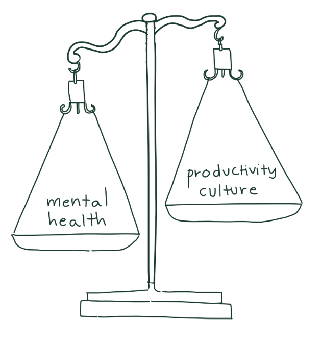

In honesty, I’ve always had a sore spot for academia.
It’s always around finals season that
I start to feel like a failure
or that I didn’t try hard enough.
Despite what I know, it’s still deeply embedded
in me that my GPA determines my worth as an artist
or even as a person.
It’s difficult to balance mental health and art school
when you already view your work as an intrinsic part of yourself.
What happens when you don’t perform as well as you’d hoped?
What does that mean for you as an artist,
as someone whose work centers around what you create?
It’s hard to separate your work and your worth
and unless capitalism is abolished,
I don’t think this will never not be difficult.

back /
index